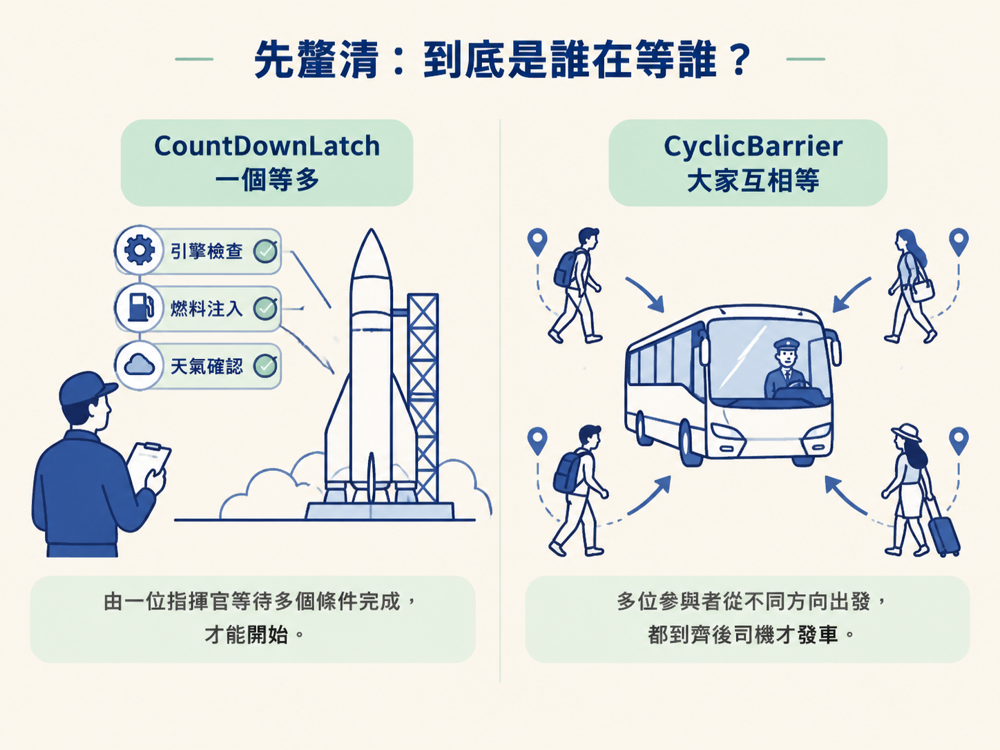
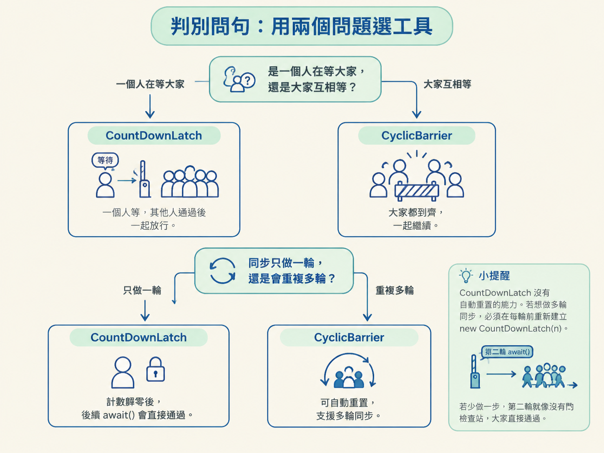
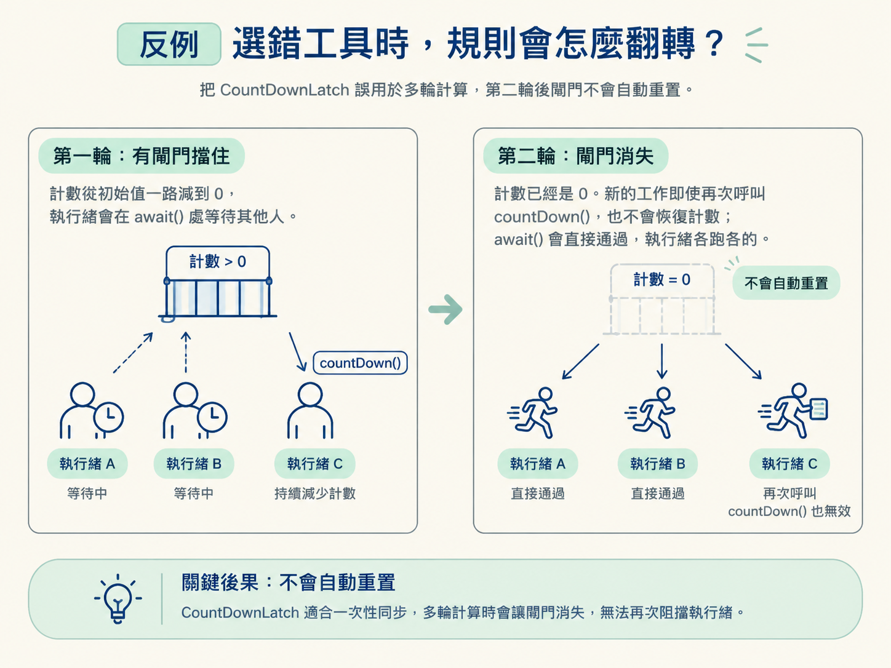

在併發程式裡，「等待」看起來只有一種，實際上卻可能是兩種完全不同的場景。
想像火箭發射。指揮官按下點火前，要等引擎檢查、燃料注入、天氣確認這三件事都完成。這裡的角色很清楚：一個人在等，其他人負責把工作做完。
再想像公司出遊搭巴士。每個人從不同地方出發，到了集合點後，必須等所有人到齊，司機才發車。這時沒有一個特別的指揮官，每個人都在等其他人。
Java 的 CountDownLatch 和 CyclicBarrier，正好分別對應這兩種等待方式。選錯工具時，程式不一定立刻報錯，卻可能在多輪同步時失去等待效果，或因為永遠少一個參與者而全部卡住。

這一課的判斷重點有兩個：誰在等誰，以及這個同步點只使用一次，還是會重複很多輪。
先把差異攤開來看。這張表的第一列和第三列，是最值得記住的線索。
| 比較點 | CountDownLatch | CyclicBarrier |
|---|---|---|
| 等待模式 | 一個或多個執行緒等其他工作完成 | 所有執行緒互相等到齊，再一起繼續 |
| 誰呼叫等待 | 主執行緒呼叫 await()，工作執行緒呼叫 countDown() | 每一條參與同步的執行緒都呼叫 await() |
| 可複用性 | 一次性；計數歸零後就不能重置 | 可循環；一輪到齊並放行後會自動重置 |
| 底層實作 | 直接基於 AQS 的共享模式，state 就是計數 | 基於 ReentrantLock + Condition，計數是受鎖保護的普通變數 |
| 典型場景 | 等待多個初始化工作完成、彙總並行任務結果 | 分階段的多輪計算，每輪結束後讓所有執行緒重新對齊 |
CountDownLatch 是單向的等待：有人負責等待，其他人完成工作後倒數。計數降到 0，等待者全部放行，這次同步就結束了。
CyclicBarrier 則是對稱的等待：每個執行緒都是參與者，也都必須抵達同一個同步點。人數到齊後，大家一起通過；接著屏障會重新準備好，迎接下一輪。
遇到需求時，不要先背 API 名稱。先問自己下面兩個問題。
問題一：是「一個人在等大家」，還是「大家互相等」？
如果有一個主執行緒負責等待結果，而其他執行緒各自完成工作並回報，使用 CountDownLatch 比較自然。例如啟動服務時，主執行緒等待多個初始化任務完成；或所有平行任務做完後，再由某個執行緒彙總結果。
如果所有執行緒地位相同，每個人都必須抵達某個階段，缺一個就不能往下走，使用 CyclicBarrier。例如分階段計算：每一輪各自處理資料，等所有人完成後一起進入下一輪。
問題二：同步只需要一輪，還是會重複很多輪？
只做一次時，兩個工具都有可能適用；但如果同一批執行緒要反覆在多個階段集合，就優先考慮 CyclicBarrier。它在一輪結束後會自動重置，不需要另外建立新的同步器。
CountDownLatch 沒有這種能力。計數從初始值降到 0 後，所有後續的 await() 都會直接通過。若硬要用它做多輪同步，就必須在每輪開始前重新建立 new CountDownLatch(n)；少做一步，第二輪就會像沒有門的檢查站，大家直接通過。

兩者的底層設計，正是由「是否需要重置」這個需求決定的。
CountDownLatch 的規則很單純：計數從 N 開始往下減，減到 0 後永久放行。這和 AQS 的共享模式很吻合。它把計數放在 AQS 的 state 中；每次呼叫 countDown()，就嘗試用 CAS 將 state 減一。當計數降到 0，就喚醒所有正在 await() 上等待的執行緒。
這裡不需要把狀態恢復成原本的數字，因此實作可以維持單向前進：從 N 走到 0，完成後就結束。
CyclicBarrier 多了一個要求：這一輪放行後，下一輪還要從原本的人數重新開始。它需要同時處理「有人抵達」「還差幾人」「最後一人抵達時如何切換到下一輪」等狀態，因此使用 ReentrantLock + Condition。
每個執行緒進入 await() 時，會在鎖的保護下更新計數。尚未到達門檻的執行緒在 Condition 上等待；最後一個抵達的執行緒負責完成這一輪的切換、重置計數，再喚醒其他等待者。
所以，兩者雖然都在處理「等待」，卻不是同一種等待：一個只需要把倒數做到 0，另一個則要在每一輪的等待、放行與重置之間循環。
先看把 CyclicBarrier 用在「一個等多」的情況。
假設主執行緒只是想等待三個工作執行緒完成，卻改用需要四人到齊的屏障。這時主執行緒也必須呼叫一次 await()，否則屏障永遠少一人，三個工作執行緒會一直等下去。主執行緒原本只是等待結果，卻被迫變成同步參與者，設計就變得彆扭，也容易造成死等。
再看把 CountDownLatch 用在多輪計算。
第一輪結束後，計數已經是 0。到了第二輪，新的工作即使再次呼叫 countDown()，也不會把計數恢復成初始值；此時 await() 會直接通過，無法再阻擋執行緒等待其他人。程式表面上還在呼叫同步 API，實際上大家已經各跑各的。

這個反例有一個例外：如果每一輪本來就是獨立的一次性任務，而且你願意在每輪開始時明確建立新的 CountDownLatch，那它仍然可以使用。問題不在於「CountDownLatch 絕對不能多輪」，而在於它不會替你自動重置。
先問「誰等誰、要不要重複」。如果是一個執行緒等待一批任務完成，而且只需要放行一次，使用 CountDownLatch；如果所有執行緒都要等彼此，並且會在多個階段反覆集合，使用 CyclicBarrier。前者以 AQS 共享模式和 state 實作一次性倒數，後者以 ReentrantLock + Condition 實作可重複的到齊與重置。
可以在寫程式前快速檢查三件事：等待者是不是和工作者不同？所有參與者是不是都要抵達同一個同步點？同步點是不是會重複使用？答案若分別指向「一個等多」「大家互等」「需要多輪」，就選 CountDownLatch 或 CyclicBarrier 時不容易走錯。
工具能處理執行緒之間的等待與會合後，下一個問題就是：任務本身要怎麼串起來。下一節會看到 CompletableFuture 如何用 CAS 和無鎖棧接起一連串非同步步驟，以及 ForkJoinPool 為什麼適合處理可以拆解的大型任務。